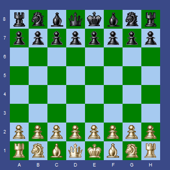

Rule-aware movement
Move generation covers pawns, sliders, knights, kings, captures, castling, en passant and promotion. Moves that expose the king are rejected.
Object Pascal · VCL · Win32
Add a playable board to a Delphi application without rebuilding move validation, position history, FEN handling, board rendering, and engine integration from scratch.
TChessBoard
The component
TChessBoard is a reusable visual component rather than a board-drawing widget. It owns the current position, draws the board and pieces, validates moves, preserves history, and reports game events to its host application.
It follows familiar Delphi conventions: install the package, drop the control on a form, set published properties in the Object Inspector, and connect event handlers. It can serve human games, position editors, analysis tools, or a chess-engine front end.
Move generation covers pawns, sliders, knights, kings, captures, castling, en passant and promotion. Moves that expose the king are rejected.
Events report checkmate, stalemate, insufficient material and threefold repetition without duplicating tests in form code.
Move, MoveBackward and MoveForward navigate played positions, with optional last-move highlighting.
Orientation, square size, labels, colors, piece bitmaps and highlights are published properties. Editable bitmap sets are included.
FENPosition loads and serializes positions, including side to move, castling rights and en-passant state.
Setup mode supports clearing a board and placing pieces by drag and drop. The demo exposes it as a custom-position editor.
Public surface
The common path is intentionally short while enough state remains exposed for analysis tools and full chess GUIs.
| Member | Purpose |
|---|---|
Move('e2e4') | Attempts a coordinate move and returns whether it was accepted. |
NewGame | Restores the initial position and resets history. |
FENPosition | Reads or replaces the position using standard FEN notation. |
WhiteOnTop | Flips orientation without changing the position. |
PV / PVHighLight | Displays a principal-variation move reported by an engine. |
OnLegalMove | Reports accepted moves for notation, clocks, or engine notification. |
OnPromotion | Lets the host select the new piece on the final rank. |
OnCheckMate | Signals that the current player has no legal response to check. |
Small integration surface
The board accepts long algebraic coordinate moves—the same compact form used by UCI engines. The GUI remains free to display SAN, PGN, clocks, players, or analysis in its own controls.
ChessBoard.NewGame;
ChessBoard.Move('e2e4');
ChessBoard.Move('e7e5');
CurrentFEN := ChessBoard.FENPosition;
ChessBoard.WhiteOnTop := True;
ChessBoard.PVHighLight := True;UCI demonstration
UCI is a text protocol separating interface from engine. The demo shows the entire connection instead of hiding it behind a library.
EngineCommunication.pas launches the executable selected in Chess.ini and connects redirected input and output pipes.
The GUI sends uci, isready, ucinewgame, plus supported hash and thread options.
Normal games use position startpos moves …; edited boards use position fen … moves ….
A go movetime command supplies thinking time. Incoming info lines update the log and PV highlight.
On bestmove, the demo applies the coordinate move through the same public API used for human play.
Source map
ChessTypes.pasBoard records, piece constants, events and move metadata.
LegalMoves.pasMove generation, attack detection and terminal-position rules.
ChessBoard.pasVCL rendering, interaction, history, FEN, setup mode and API.
EngineCommunication.pasThreaded Windows process and pipe communication for UCI.
MainForm.pasExample joining board events, commands, output, and setup tools.
ChessPieces*Editable bitmap sources at 22, 30, 40 and 80-pixel sizes.
Build and run
Run build.bat release for the Win32 demo. To install the component, open ChessBoardPackage.dpk, build it, and choose Install. The release archive contains the GUI, configuration, and Pawnora engine for quick testing.